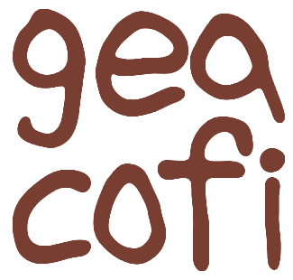

ya pasó
ya pasó
café, discos y eso…
Café de especialidad en 9 de Julio 996, Corrientes.
la carta, lado A
A
Lado A
calientes
01espressoshot chiquito$ 3.700
02cortaditoespresso + leche$ 3.900
03uno y unoespresso + cortadito$ 4.100
04americanodoble espresso + agua$ 4.200
abrí un sobre, descubrí un café
Trabajamos con distintos tostadores y los cafés van rotando.
✂ cortá acá

sobre de cafés · 5 figuritasMOMO#07

Rift Guji
Guji, Etiopía · Natural
mieldamascosfloral
La Motofeca#13

Motoblend
Blend de la casa
Fusion
Lo de Pepe Tostadores#14

Café de la semana
Va rotando
Preguntá en la barra
Komún TostadoresMOMOLa MotofecaLo de Pepe Tostadores

cuatro formas de colar un café
aeropress$ 5.500
origami$ 6.000
v60$ 6.000
chemex$ 6.500
qué pasa en geacofi
ya pasó ya pasó
ya pasó